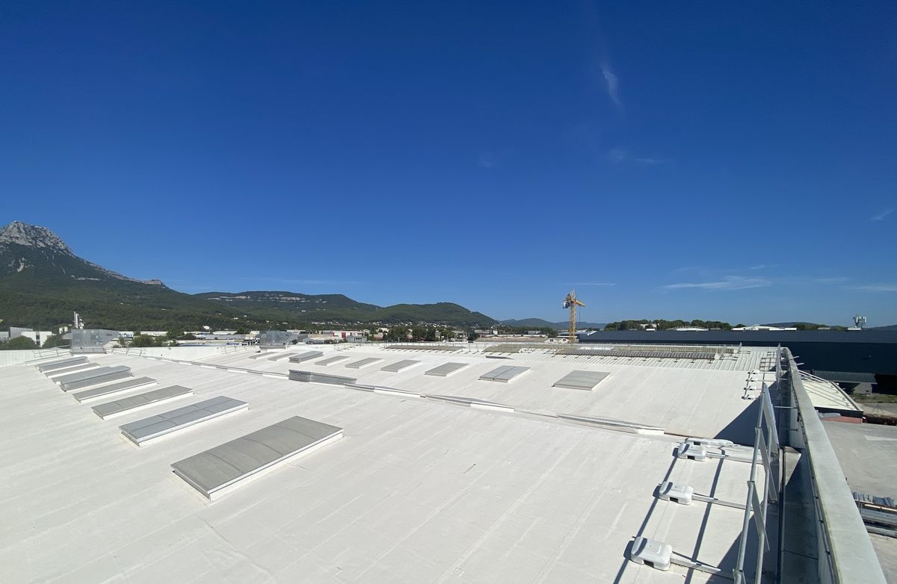

Cool roofing dans le Var
Nous appliquons une peinture blanche réflective sur votre toiture, de Toulon à Narbonne. Elle renvoie jusqu'à 85 % du rayonnement solaire, donc le toit chauffe beaucoup moins, et le bâtiment aussi. On parle de cool roofing, de cool roof ou de toiture blanche. Pas de gros travaux, et votre activité continue.

Pourquoi ça marche
En plein été, une toiture sombre peut monter à 70 °C. Cette chaleur passe à travers l'isolant et reste coincée dans le bâtiment. Il fait trop chaud à l'intérieur et la clim tourne sans arrêt.
La peinture blanche renvoie le soleil avant qu'il ne chauffe le toit. Le toit reste bien plus frais, les étages du haut redeviennent supportables et la clim travaille moins.
Tout se fait depuis le toit, sans couper votre activité. Dans le Var, l'Hérault ou l'Aude, avec des étés de plus en plus chauds, c'est souvent le moyen le plus simple de gagner quelques degrés.
Bâtiments concernés
- Sites industriels
- Entrepôts et logistique
- Surfaces commerciales
- Bureaux et tertiaire
- Bailleurs sociaux
- Copropriétés
- Établissements publics
- Écoles

Comment se passe un chantier
Vous gardez le même interlocuteur, de la visite à la fin des travaux.
- Diagnostic
Nous venons voir votre toit gratuitement sous 15 jours, nous mesurons et vérifions le support. Vous recevez le devis détaillé dans la semaine.
- Préparation
Nous nettoyons la toiture, traitons les algues et posons un primaire d'accroche adapté à votre support.
- Application
Deux couches croisées de 250 g/m² de peinture réflective blanche. Le chantier est sécurisé et vous continuez à travailler.
Une toiture d'entrepôt
Toute la surface est passée en blanc. Les lanterneaux et les garde-corps sont restés en place.

 Applicateur officiel
Applicateur officielLa peinture utilisée : Enercool Sunprotect
Nous sommes applicateur officiel Enercool. Le Sunprotect est une peinture acrylique à l'eau, fabriquée en France. Son pigment renvoie les infrarouges et ses charges en aérogel de silice isolent.
| Réflexion solaire | 0,85ASTM E903-12 |
|---|---|
| Émissivité thermique | 0,89ASTM C1371-15 |
| Indice de réflexion solaire (SRI) | 107105 après 4000 h |
| Conductivité thermique | 0,096 W/mK |
| Élongation | > 300 %suit la dilatation |
| Classement au feu | Broof(t3)rapport CSTB |
| NF EN 1062-1 | E4V2W3A1imperméable, respirant |
| Vieillissement accéléré | 500 h QUVsans jaunir ni craqueler |
| COV | < 5 g/l |
Supports compatibles
Bac acier, zinc, aluminium et polycarbonate ; membrane bitumineuse, béton, tuiles, ardoises et fibrociment ; membranes PVC, TPO et EPDM. Pente de toit d'au moins 3 %, sans zone de stagnation d'eau.
Stable aux UV, résiste à l'humidité, aux huiles et aux salissures.
Côté environnement
25 % de matières recyclées (carbonate de calcium issu de coquilles d'œufs françaises), sans résine fluorée, seaux en plastique recyclé, nettoyage à l'eau.
Valeurs issues du descriptif technique Enercool Sunprotect PAE (mai 2024). Les gains de température et de climatisation varient selon le bâtiment.
Vos questions
Ce qu'on nous demande le plus souvent avant un chantier de toiture blanche.
Qu'est-ce que le cool roofing, ou cool roof ?
Le cool roofing consiste à appliquer sur une toiture un revêtement blanc réflectif, aussi appelé peinture thermo-réflective ou toiture blanche. Il renvoie jusqu'à 85 % du rayonnement solaire, ce qui limite l'échauffement de la toiture et du bâtiment.
Quels types de toiture peut-on traiter ?
Bac acier, zinc, aluminium, polycarbonate, membrane bitumineuse, béton, tuiles, ardoises, fibrociment, ainsi que les membranes PVC, TPO et EPDM. La pente doit être d'au moins 3 %, sans zone de stagnation d'eau.
Combien de temps dure une toiture blanche ?
Le revêtement Enercool Sunprotect résiste aux UV, à l'humidité et aux salissures. Après vieillissement accéléré, son indice de réflexion solaire reste à 105 (107 à neuf), sans jaunissement ni craquelure.
Faut-il arrêter l'activité pendant les travaux ?
Non. L'application se fait entièrement par l'extérieur, sans intervention dans les locaux. Votre activité continue normalement pendant le chantier.
Quel gain de température peut-on attendre ?
Sur les chantiers mesurés par Enercool : de −3,5 à −4,6 °C de température intérieure en moyenne, jusqu'à −8,5 °C en pic, et de −7 % à −29 % de consommation d'électricité. Le gain réel dépend du bâtiment.
Intervenez-vous dans ma ville ?
Nous intervenons de Toulon à Narbonne : Var, Bouches-du-Rhône, Gard, Hérault et Aude. La liste détaillée des villes figure sur la page zones d'intervention.